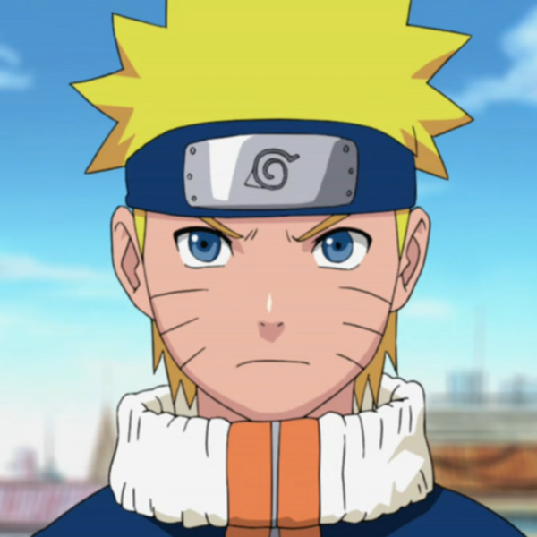
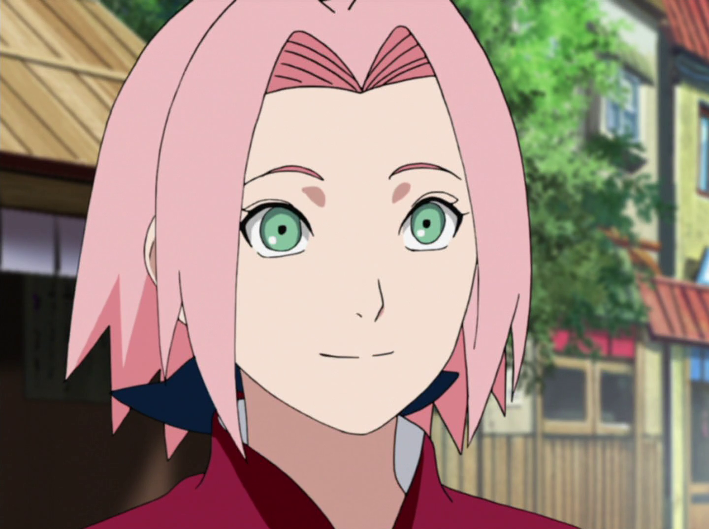
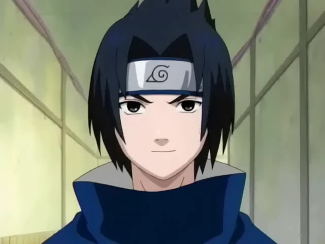

-
Despre
Naruto este o serie manga japoneză scrisă și ilustrată de Masashi Kishimoto, având și o adaptare anime. Personajul principal, Naruto Uzumaki, este un ninja adolescent, imprevizibil și hiperactiv, care este într-o constantă căutare de cunoaștere, visând să devină Hokage, un ninja recunoscut ca cel mai puternic dintre toți și liderul satului.
Prima serie animată din cele două serii anunțate, produs de Studio Pierrot și Aniplex, a avut premiera în Japonia pe TV Tokyo Network și pe postul satelit Animax pe data de 3 octombrie 2002, și se află și la această oră în cadrul programului TV. Naruto a debutat în Statele Unite în cadrul programului Toonami al Cartoon Network, la data de 10 septembrie 2005, iar în Canada pe YTV's Bionix pe data de 16 septembrie 2005. Naruto a început să fie vizionat în Regatul Unit pe programul Jetix pe data de 22 iulie 2006. A început de asemenea să fie difuzat pe Toasted TV pe data de 12 ianuarie 2007, în Australia, deși putea fi vizionat pe Cartoon Network în 2006. In Romania a fost difuzat începând cu data de 27 februarie 2007 pe canalul Jetix. Au fost difuzate 4 sezoane adica 104 episoade. Prima serie a durat 9 sezoane, numărând un total de 220 de episoade.
A doua serie numită Naruto: Shippūden și-a început primul sezon pe data de 15 februarie 2007, și a fost finalizată cu sezonul 21 pe data de 23 martie 2017.
-
Subiectul
Cu doisprezece ani în urmă, Bestia Cu Nouă Cozi ce reprezenta o vulpe atacă satul ninja Konohagakure (cunoscut drept Konoha sau Satul Ascuns între Frunze). Destul de puternic pentru a provoca tsunami și a nivela munții cu o rotire a cozii sale, instaurează haosul și măcelărește mulți oameni, până când liderul satului Konoha – al Patrulea Hokage – își sacrifică propria viață pentru a sigila vulpea în corpul nou-născutului Naruto. Al Patrulea Hokage, care a fost sărbătorit ca erou pentru sigilarea demonului, dorea ca Naruto să aibă parte de același respect din partea lor fiind "recipientul" în care demonului Vulpe este sigilat. Cu toate acestea, satul Konoha îl evită, privindu-l pe Naruto ca pe însuși demonul și tratându-l necorespunzător de-a lungul copilăriei sale. Al Treilea Hokage decretează ca nimeni să nu dezvăluie nimănui despre atacul Vulpii, nici măcar propriilor copii. Totuși, acest lucru nu i-a oprit să îl trateze ca pe un proscris, Naruto crescând orfan, fără prieteni și fără a fi recunoscut. Nu putea forța oamenii să se împrietenească cu el, atrăgând atenția asupra sa în modul lui propriu: farse și pozne. Acest lucru se schimbă după ce Naruto devine absolvent al Academiei Ninja, folosind Tehnica Umbrei, o tehnică dintr-un pergament interzis, pe care a fost păcălit să-l fure pentru a își salva profesorul, Iruka Umino, de renegatul Mizuki. Acea întâlnire îi dezvăluie lui Naruto că este purtătorul demonului Vulpe și că, pe lângă Al Treilea Hokage, mai există cineva căruia îi păsa de el și îi accepta prezența. Absolvirea de la academie îi deschide calea spre evenimentele și oamenii care îi vor schimba și defini lumea, inclusiv calea de a fi un ninja, pentru restul vieții sale. De-a lungul seriei, se pune accent pe dezvoltarea personajelor, cu puține lucruri întâmplătoare. Mai întâi, accentul se pune pe Naruto, Sasuke și Sakura, membrii Echipa 7. Totuși, și alte personaje sunt prezentate în aceeași ipostază, cum ar fi Kakashi, Tsunade, Jiraiya, la fel și membrii celorlalte echipe și sate. Câteva personaje negative sunt prezentate de asemenea, primul fiind Zabuza Momochi, din satul Kiri și partenerul său, Haku.
-
Personaje

Hatake Kakashi Hatake Kakashi este unul dintre personajele principale ale seriei, un shinobi de nivel jonin din Konoha și liderul echipei 7. El este cunoscut în întreaga lume shinobi datorită Sharingan-ului său, fiind cunoscut ca și un "ninja copiator". Kakashi este văzut ca un geniu natural, evidențiat prin creșterea sa meteorică prin rândurile de ninja, absolvind Academia la vârsta de 5 ani și devenind Chunin la vârsta de 6 ani, având și un mare statut ca ANBU. Kakashi se bazează pe stăpânirea ninjutsului, având un vast arsenal datorită Sharingan-ului sau, fiind remarcat că a copiat peste 1.000 de tehnici, numarul acestora crescand. Fata de numarul de tehnici pe care le stie, Kakashi este un expert in transformarea naturii, avand o aginitate pentru Lansarea de Fulger, afinitate stapanita inainte de a deveni jonin. Capacitatea cea mai dinstinctiva a lui Kakashi este sharinganul sau, care a fost initial o parte din Obito. Pentru ca el nu este un Uchiha, Kakashi nu este in masura sa dezactiveze sharinganul, tinand ochiul acoperit pentru a nu folosi o cantitate masiva, care i-ar provoca o sedere obligatorie in pat.  Naruto Uzumaki Naruto este principalul protagonist al seriilor cu acelasi nume, este un ninja din satul Konoha, care viseaza sa devina Hokage. Datorita faptului ca este gazda vulpii cu noua cozi, este evitat de ceilalti sateni. El compensează acest lucru cu personalitatea sa și pe parcursul seriilor, reușește să se împrietenească cu alti ninja din satul Konoha și din alte sate. Are o relatie foarte apropiată cu colegul lui ninja, Sasuke Uchiha, tratându-l ca pe un frate. Naruto este foarte ambițios,copilăros,independent,prietenos și foarte încapătânat. In seria Shippuden, el se intoarce in Konoha dupa o absenta de 2 ani si jumatate, devenind mai puternic si mai matur in fiecare zi, si se apropie din ce in ce mai mult de cele 2 scopuri prinicipale: Sasuke si titlul de hokage.  Sakura Haruno Sakura Haruno este singura membră feminină a Echipei 7. In copilarie, Sakura a fost ironizată de ceilalți copii datorită frunții sale mari, însă atenuată de Ino Yamanaka. Pe măsură ce cele două se maturizează, fetele continuă să se distanțeze datorită sentimentelor împărtășite pentru Sasuke Uchiha. Pe parcursul părții întâi, Sakura este indragostita de Sasuke și izbucnește în fața avansurilor lui Naruto. După ce Sasuke părăsește satul, ea devine mai puternică antrenându-se cu Tsunade, care vede in ea un mare potential si chiar crede ca ar putea-o depasi. La inceputul seriei, abilitatile lui Sakura ca ninja au fost mai mici decat ale colegilor ei de echipa, Sasuke si Naruto, cea mai mare putere a ei fiind inteligenta. Dupa 2 ani si jumatate de formare alaturi de Tsunade, abilitatile ei au crescut foarte mult. Aptitudinile ei in alte domenii au crescut iar impreuna cu abilitatile fizice, Sakura a mostenit rezistenta si dispretul de a pierde. Datorita controlului ei chakra excelent, Sakura a fost remarcata de a avea o aptitudine naturala pentru genjutsu.  Sasuke Uchiha Sasuke Uchiha este printre puținii membri în viață ai clanului Uchiha, datorită faptului că fratele său, Itachi Uchiha, si-a omorat clanul. Datorită acestui lucru, Sasuke crește cu o personalitate rece, având ca dorință uciderea fratelui său mai mare. Interacțiunile sale cu membrii echipei, mai ales cu Naruto Uzumaki, îl fac să se concentreze mai puțin la răzbunare, însă întâlnirea cu Itachi, care îl lasă pe Sasuke învins mental și fizic, îl determină pe Sasuke să plece din sat și să caute mai multă putere din partea criminalului Orochimaru. Dupa 3 ani, Sasuke realizand ca nu mai are ce invata de la Orochimaru, il ucide si recruteaza o echipa,Hebi,formata din Suigetsu Hozuki , Karin Uzumaki si Jugo Bipolar, pentru a-l gasi pe Itachi. Mai tarziu, il gaseste pe Itachi iar dupa ce se lupta Sasuke scapa De Semnul Blestemat si Itachi moare.Fiind urmariti de Zetsu acesta il duse pe Sasuke la Tobi si afla ca a fost fortat pentru siguranta satului sa isi omoare familia, in urma acesteia el are ca scop si dorinta distrugerea Satului Ascuns intre Frunze. -
Galerie Foto
poza 1 poza 2 poza 3 poza 4